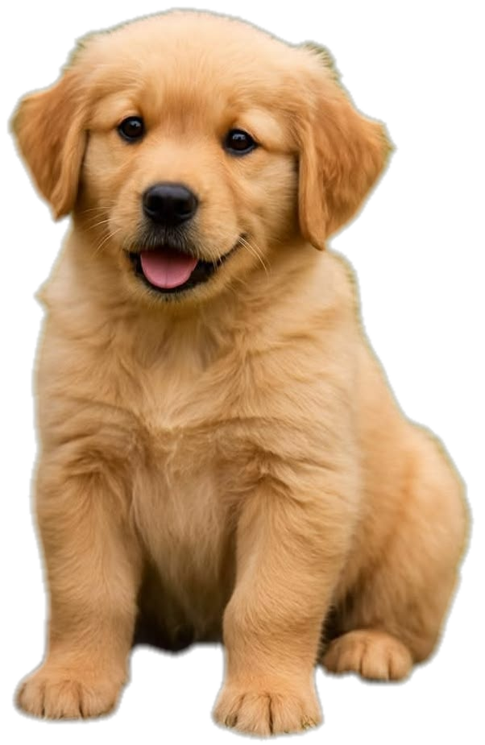
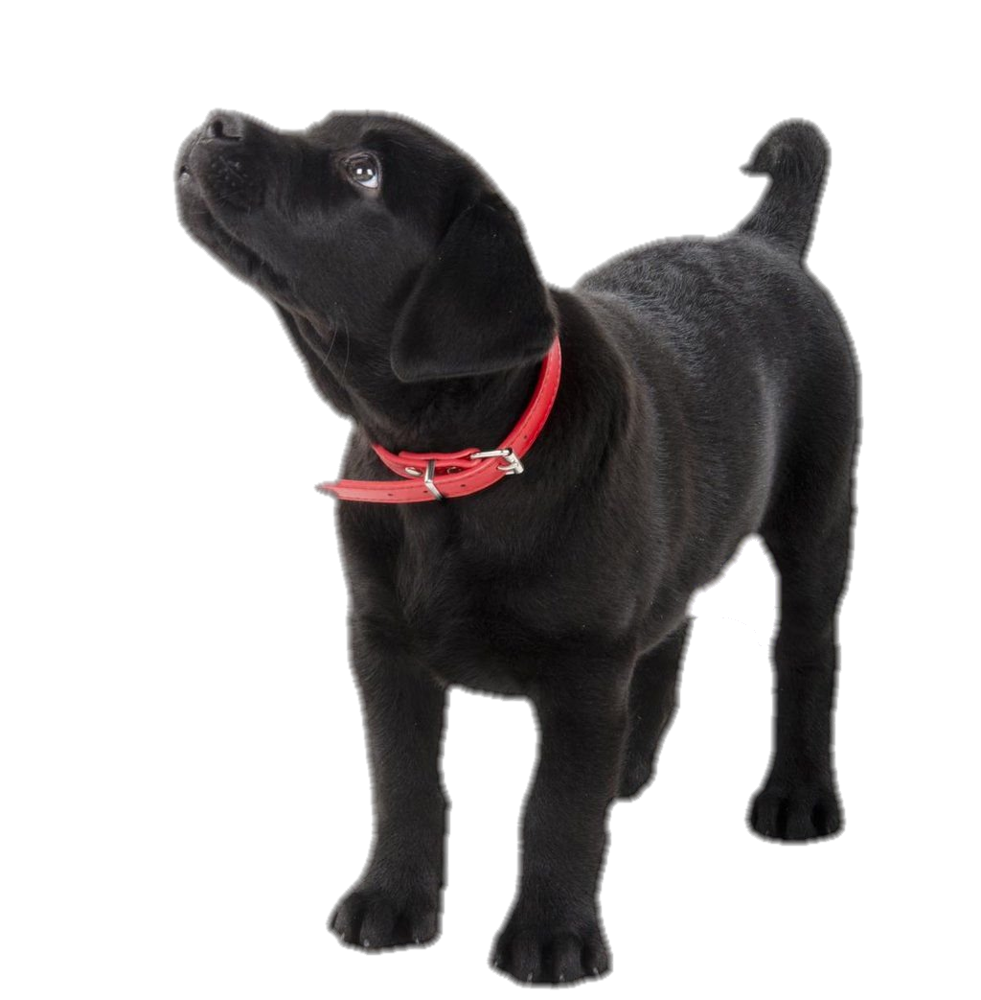

Adoption Process
Requirements to adopt
You must :
- be between the ages of 18 and 65
- have a valid identification document (omang or passport)
- have proof of residence
- have a filled in adoption form
- have any document to show financial stability

Steps to adopt
Ensure your readiness
Adopting a puppy comes with a lot of responsibility. Before adopting a puppy consider your lifestyle, budget, family dynamics and your home environment. Basically, are you ready to be a pet owner?
Consider your options
Look at all of the puppies that are available for adoption, their traits and their special requirements. Do not override any puppy before you get to know it.
Select the right puppy of choice
Basing on the breed, its special requirements and the puppies behaviour, select a puppy which you know you will be able to deal with, love and care for.
Meet and interact with the puppy
If possible, you can spend some time with the puppy before you get to fill in the adoption application form.
This is so as to ensure behaviour and comfort level with the puppy, and also if you and the puppy are a good match.
NB:It is optional to do a meet and interact with our puppies before adoption
Fill in an adoption application and submit
An adoption application serves as a document that ensures the puppy is in safe hands and going to a lovely home. Once you are certain that you have made the right choice and indeed you want to be a pet owner, you fill in the adotion papers.
Finalize the adoption
After your application has been reviewed and approved, necessary paperwork is signed. The shelter then provides necessary documentated information on the puppy, e.g. vaccination history, medical records, care instructions.
Rehoming the puppy
We offer delivery services to adopters around Gaborone but besides that, an adopter can also come to our shelter in Mogoditshane to come pick up their new pup.
Adoption Application Form
Note: The application form can be submitted via our email address or at our physical shelter.
Taking care of adopted puppies
- Provide quality food and clean water regularly
- Provide shelter
- Take puppies out for exercising, avoid restristing movement all the time
- Take puppies for veterinary check ups when sick
- Have a bathing routine for your pup
- Practice pest and parasite prevention and control
